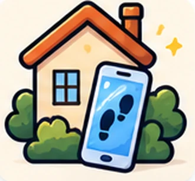

Kies je zaak
Elke zaak heeft een eigen verhaal en een gratis proefronde: speel die eerst samen op de bank, dan weet iedereen hoe het werkt. Met de Feestpas speel je de echte zaak, buiten in je eigen buurt of binnen in huis.
Zo werkt het
Geen app, geen account. Gewoon openen in de browser.
- BuitenEen speurtocht legt plekken in jullie eigen buurt. Loop erheen, daar wacht een opdracht.
- Puzzels & spelletjesRaadsels, groepsfoto's, zoekplaatjes, schudden en blazen. Iedereen doet mee.

Of binnenIn de woonkamer of de tuin: zonder kaart, of met de telefoon als toverspiegel.- DiplomaZaak opgelost? Je krijgt een diploma met jullie foto's, om te bewaren of te printen.
Tips voor de volwassene
- Eén telefoon per groepje is genoeg. Speel je met meer telefoons? Vul op elke telefoon dezelfde Feestpas-code in en daarna de zaakcode. Die staat op de eerste telefoon bij de start van de zaak en in het Speurboekje.
- Lees de sporen en raadsels hardop voor aan de hele groep: dat is het leukste moment.
- Speel je buiten? Blijf op de stoep; een volwassene loopt altijd mee.
- Reken op 40 tot 75 minuten, inclusief taart halverwege.